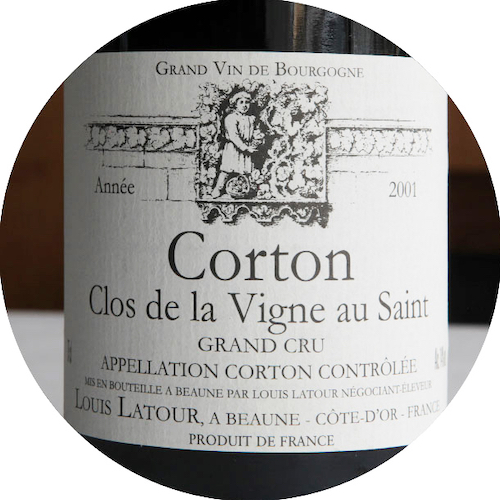
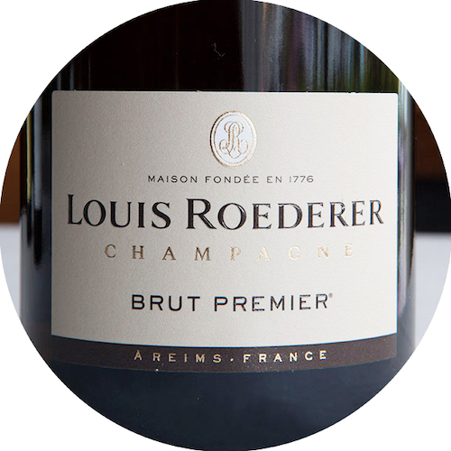
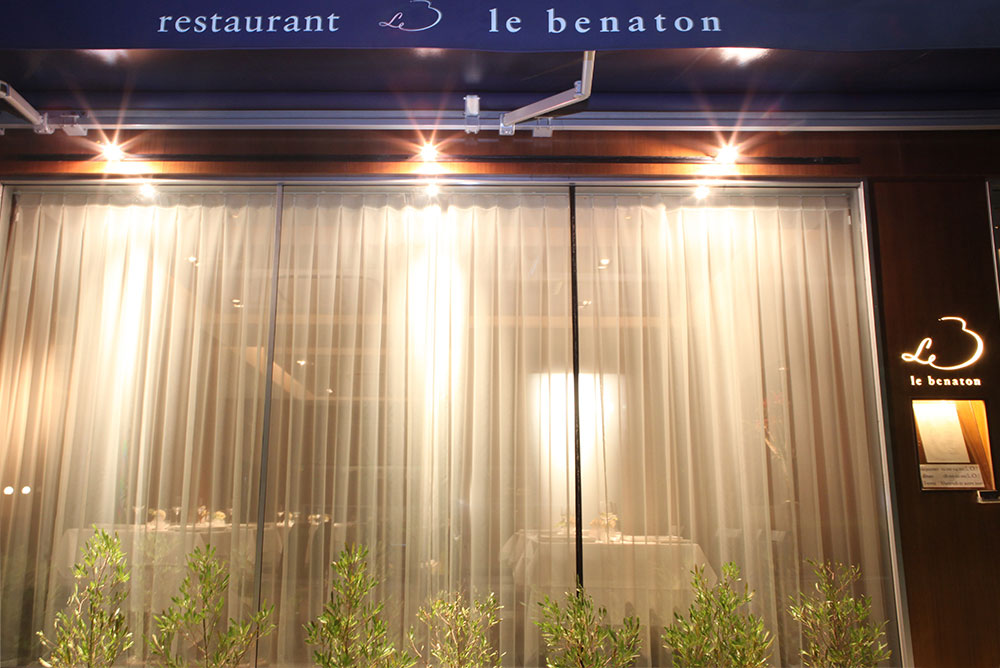
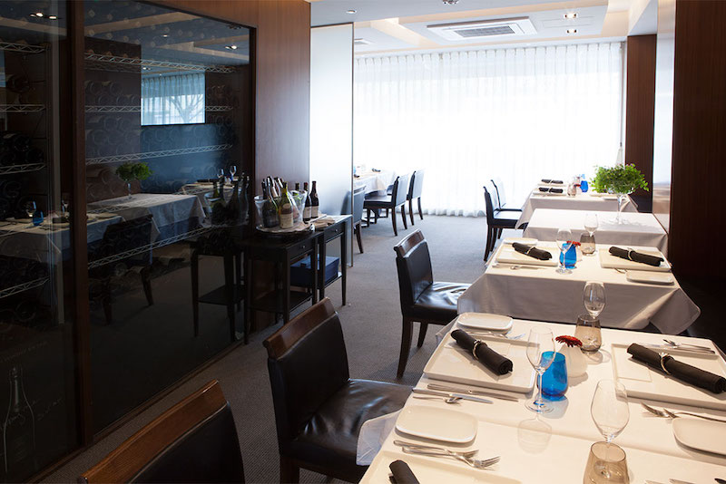
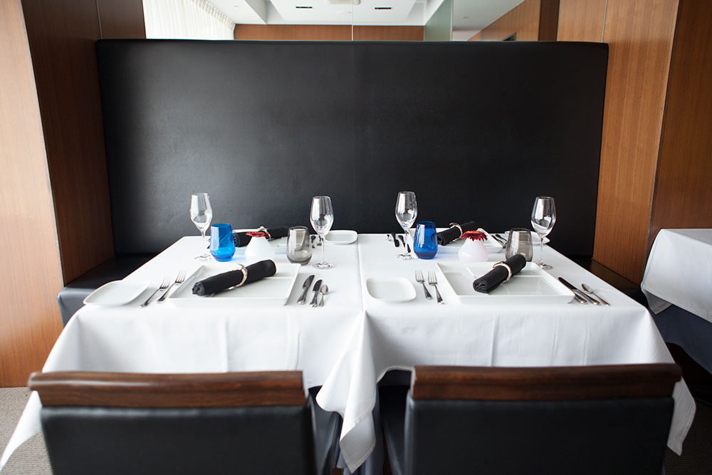

西宮・夙川のフレンチレストラン「ル ベナトン」


ランチ 11：45～14：00（ラストオーダー）
日々の疲れを癒やし、ゆっくりと過ごす贅沢時間
魚介は瀬戸内、野菜は兵庫県産をメインに、肉は各々の時期にもっともおいしいものを日本全国から仕入れ、ヨーロッパ各地からも、オマール海老、秋から冬にかけて旬をむかえるハト、カモなどのジビエも仕入れ、本格的なフランス料理を、満足のいくボリュームでご提供しています。
お客様に贅沢な時間を過ごしていただきたいという思いから、ランチでも、ディナーでご提供しているコース・ワインもご注文いただくことができます。ダークブラウンの落ち着いた空間で、思い出に残るひとときをお過ごしください。

Aコース(ランチのみ)
- アミューズ
- 前菜（数種類の中らお選びいただけます）
- メイン料理（本日のお魚又はお肉料理）
- デザート
- パン、コーヒー
3,850円(税込)

Ｂコース(ランチのみ)
- アミューズ
- 前菜（数種類の中らお選びいただけます）
- お魚料理（数種類の中らお選びいただけます）
- お肉料理（数種類の中らお選びいただけます）
- デザート
- パン、コーヒー
5,280円(税込)

Ｃ・シェフお任せコース(ランチのみ)
- アミューズ、前菜、メイン（お肉、魚介）を、その日の食材でお料理を組み立てさせていただきます
- デザート
- パン、コーヒー
6,600円(税込)
ディナー 18：00～21：00（ラストオーダー）
フランス食の都「ボーヌ」仕込みのディナーをご堪能ください
フランス・ブルゴーニュ地方は食とワインの宝庫として知られています。「食の都」ボーヌの星付きレストランで修業した当店シェフは、カモ、シカ、イノシシなどのお肉への最高の火入れの技術を有し、本場のフランス料理だけではなくワインにも精通しています。野菜は毎週、旬の物を産地まで買い付けに行きます。ヨーロッパ各地から仕入れるハト、カモなどのジビエ料理、フランス・ブルターニュ産のオマール海老、日本近海で獲れた新鮮な魚介もお楽しみいただけます。
ブルゴーニュワインに特化したワインセラーも店内に完備。現地の風土を知り尽くした選び抜かれたブルゴーニュワインと本格的なフランス料理は、あたかもブルゴーニュを旅したような食体験です。旬の食材からコース料理をご提案いたしますので、ゆったりとした時間をお楽しみください。

ブルギニオンコース
- アミューズ
- 前菜（数種類の中らお選びいただけます）
- お魚料理
- お肉料理（数種類の中らお選びいただけます）
- チーズ又は、小さなサラダ
- デザート(数種類の中からお選びいただけます)
- パン、コーヒー
6,600円(税込、サービス料５%別途)

グルマンコース
- アミューズ
- 前菜２種（数種類の中らお選びいただけます）
- ボキャルドオマール（オマール海老のスープ仕立)
- メイン料理（数種類のお肉の中からお選びいただけます)
- チーズ又は、小さなサラダ
- デザート(数種類の中からお選びいただけます)
- パン、コーヒー
9,350円(税込、サービス料５%別途)

デギュステ・シェフお任せコース
- アミューズ
- その日の食材でお客様とお話させていただいてお料理を組み立てさせていただきます
- デザート(数種類の中からお選びいただけます)
- パン、コーヒー
13,200円(税込、サービス料５%別途)
その他、お客様のご希望がございましたら、スタッフにお申し付け下さい。
ワイン
ワインの名産地「黄金の丘」より選び抜いたワインをご提案いたします
食の都「ボーヌ」は、ワインの名産地である黄金の丘でも知られているブルゴーニュ地方の中心部に位置しています。そこの星付きレストランで修業した当店シェフは、毎週のようにドメーヌをめぐり、作り手と、香りやマリアージュ、飲み頃について意見を交わしましてきました。そこで身につけた知識と感性で、ワインをおすすめいたします。
当店ではブルゴーニュワインに特化したワインセラーを店内に完備し、当店シェフが選びぬいたブルゴーニュワインからお料理にあわせてワインを提案させていただきます。当店でどのようなワインがあるか、ぜひ、以下のリストをご覧ください。

赤ワインリスト
VIN ROUGE de Bourgogne
ブルゴーニュ ( 赤 )

白ワインリスト
VIN BLANC de Bourgogne
ブルゴーニュ( 白 )

シャンパーニュ/スパークリングワインリスト
CHAMPAGNE(シャンパーニュ)
VIN MOUSSEUX(ブルゴーニュ産スパークリングワイン)
ワイン・シャンパンの価格は、輸入価格の相場により予告なく変更することがございます。 また、ワイン・シャンパンの在庫の本数もなくなる場合がありますので、ご了承下さい。 リスト以外のワインも多数ご用意しておりますので、お気軽にお尋ね下さい。
また、当店ではワインのお持ち込みも歓迎しております。お客様のお気に入りのワインをお持ち下さい。 持ち込み料金ですが、ボトル一本に付き「3,000円」、又はお店にグラス一杯分を分けて頂くことで持ち込み料金とさせて頂いております。 お持込頂きます際には、本数、銘柄を事前にお店までお伝えください。 当日突然のお持込には対応させていただけない場合もございます、ご了承ください。 （グラス等の準備のためご協力お願いいたします）
プロフィール

本格「ボーヌ」仕込みの味
ヨーロッパと日本の食材で地元・夙川で提供いたします
フランスのブルゴーニュの食の都「ボーヌ」の星付きレストラン「ル ベナトン」での4年間の修業を経て、2008年に生まれ育った夙川に、その名前を引き継いだ自らの店をオープンいたしました。ブルゴーニュはワインの名産地である黄金の丘でも知られ、ボーヌはその中心地に位置しています。2015年には「ブルゴーニュ地方のクリマ（ブドウ畑や気候）」は世界遺産に登録されました。ボーヌでは11月の第３週末には「栄光の3日間 LES TROIS GLORIEUSES」と呼ばれるワインと食の祭典が催され、普段はブドウ畑に囲まれた小さな街が「フランス食の都」となります。
本場ブルゴーニュの味を引き継ぎ、ヨーロッパから仕入れた食材、地元の兵庫県の食材を取り入れたりしながら、故郷である夙川の地で発展させていきたいと思っています。
オーナー・シェフ 高谷慶(Kei TAKAYA)

ミシュランガイド兵庫版にも掲載されました。

客席からワインセラーを一覧いただけます

１０テーブル、２０名様までご利用いただけます